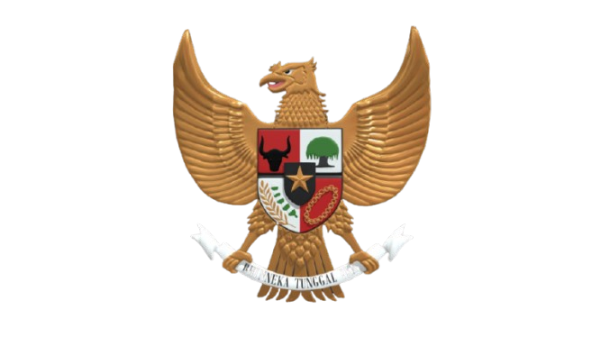

Materi PPKn
Pelajari Pancasila, demokrasi, hak dan kewajiban, serta persatuan Indonesia.
Jelajahi materi ↗Selami dunia Pancasila, pahami konstitusi, dan temukan cara menjadi warga negara yang cerdas, bertanggung jawab, dan peduli.

Berbeda-beda, tetap satu.
Temukan cara baru untuk memahami PPKn melalui materi dan aktivitas interaktif.
Pelajari Pancasila, demokrasi, hak dan kewajiban, serta persatuan Indonesia.
Jelajahi materi ↗Kenali isi UUD NRI Tahun 1945 dan penerapannya dalam kehidupan.
Pelajari konstitusi ↗Uji pemahamanmu melalui tantangan dan latihan soal yang menyenangkan.
Uji pengetahuan ↗Temukan tindakan nyata untuk menerapkan nilai Pancasila dalam kehidupan.
Mulai misi ↗Setiap warga negara memiliki peran dalam menjaga persatuan, memahami hak, dan menjalankan tanggung jawab.
Temukan Materi →Persatuan dalam keberagaman adalah salah satu kekuatan Indonesia.
SEMANGAT BHINNEKA TUNGGAL IKA
CIVIVERSE merupakan website edukasi yang dirancang untuk membantu pelajar memahami nilai Pancasila, konstitusi, demokrasi, serta kehidupan berbangsa dan bernegara dengan cara yang lebih menarik.
Belajar tentang Pancasila, konstitusi, hak, dan kewajiban dengan cara yang lebih menyenangkan.
Pelajari lima sila dan contoh penerapannya dalam kehidupan sehari-hari.
Pelajari materi →Kenali konstitusi Indonesia dan perannya dalam kehidupan bernegara.
Pelajari materi →Pahami hak, kewajiban, dan tanggung jawab sebagai warga negara.
Pelajari materi →Belajar menghargai perbedaan dan menjaga persatuan Indonesia.
Pelajari materi →Pancasila adalah dasar negara dan ideologi bangsa Indonesia. Nilai-nilainya menjadi pedoman dalam kehidupan bermasyarakat, berbangsa, dan bernegara.
Makna: Mengakui dan menghormati nilai ketuhanan serta kebebasan beragama dan beribadah.
Contoh penerapan: Menghormati teman yang berbeda agama dan tidak mengganggu orang lain saat beribadah.
Makna: Menghargai martabat manusia serta memperlakukan orang lain secara adil dan beradab.
Contoh penerapan: Menolong teman yang kesulitan dan tidak melakukan perundungan.
Makna: Mengutamakan persatuan dan kepentingan bersama di tengah keberagaman.
Contoh penerapan: Bekerja sama dengan teman tanpa membedakan suku, bahasa, atau daerah asal.
Makna: Mengutamakan musyawarah dan menghargai pendapat dalam mengambil keputusan bersama.
Contoh penerapan: Berdiskusi untuk menentukan ketua kelompok dan menghormati keputusan bersama.
Makna: Mengupayakan keadilan, keseimbangan hak dan kewajiban, serta kesejahteraan bersama.
Contoh penerapan: Membagi tugas kelompok secara adil dan tidak mengambil hak orang lain.
Undang-Undang Dasar Negara Republik Indonesia Tahun 1945 merupakan hukum dasar tertulis negara Indonesia. UUD 1945 menjadi landasan penyelenggaraan negara dan mengatur berbagai hal, termasuk lembaga negara serta hak warga negara.
Konstitusi menjadi pedoman penyelenggaraan negara dan membantu memastikan kekuasaan dijalankan sesuai aturan.
Sesuatu yang layak kita terima, misalnya memperoleh pendidikan dan perlindungan.
Sesuatu yang harus kita laksanakan, misalnya menaati aturan dan menghormati orang lain.
Contoh di sekolah: siswa berhak memperoleh pembelajaran yang baik dan berkewajiban menaati tata tertib sekolah.
Bhinneka Tunggal Ika berarti “berbeda-beda tetapi tetap satu”. Semboyan ini mengajarkan bahwa keberagaman suku, bahasa, budaya, dan agama merupakan bagian dari kehidupan bangsa Indonesia.
Berteman tanpa membeda-bedakan, menghormati tradisi daerah lain, bekerja sama, dan menyelesaikan perbedaan melalui dialog.
Pelajari konstitusi Indonesia melalui materi yang sederhana dan mudah dipahami.
⭐ 0 Pasal Favorit
Pelajari hak warga negara untuk mendapatkan pendidikan berdasarkan UUD 1945.
Mengenal perlindungan hak untuk hidup dalam konstitusi Indonesia.
Mengenal kebebasan beragama dan menyampaikan pikiran sesuai ketentuan konstitusi.
Pelajari bentuk negara, kedaulatan rakyat, dan prinsip negara hukum.
Setiap warga negara berhak dan wajib ikut serta dalam usaha pertahanan dan keamanan negara.
Setiap orang wajib menghormati hak asasi manusia orang lain dalam kehidupan bermasyarakat, berbangsa, dan bernegara.
Pasal tidak ditemukan. Coba kata kunci lain.
Uji pemahamanmu tentang pasal-pasal UUD 1945!
Jadilah warga negara yang bertanggung jawab melalui tindakan sederhana setiap hari!
0 dari 6 misi selesai